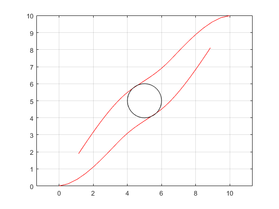

Distributed MPC for Mobile Robots
Here we give an example how ALADIN-M can be used for distributed Model Predictive Control. In particular, we show how the distributed parametric programming option and the the problem reuse option of ALADIN-M are useful. The example is similar to the example from [1]. The goal here is that two mobile robots exchange their positions while keeping a certain distance. This task can be formulated as a continuous-time optimal control problem (OCP)
Here, z_i=(x_i\; y_i\; \theta_i)^\top is the state of each robot i \in \mathcal{R}, x_i and y_i describe the robots position in the x-y-plane, and \theta_i is the yaw angle with respect to the x-axis (cf. figure below). Note that the initial condition can here be interpreted as the parameter p_i in the format suitable for ALADIN-\alpha. The robots’ dynamics is given by $$ \dot x_i= f_i(x_i,u_i) := \begin{pmatrix} v_i\cos (\theta_i) & v_i\sin(\theta_i) & \omega_i \end{pmatrix}^\top , \; %\begin{pmatrix} %\cos (\theta_i) & 0 \ %\sin(\theta_i) & 0 \ %0 & 1 %\end{pmatrix} %\begin{pmatrix} %v_i \ \omega_i %\end{pmatrix}, \quad i \in {1,2}. $$
Distributed Problem Setup
Code-wise, we set up the right-hand-side of the ode dynamics from above as
1 2 3 4 | |
Next, we prepare ourself for setting ob the robots’ OCPs. We construct our problem using CasADi. Specifically, we create cells XX and UU containing the CasADi symbolic variables for the states z and the inputs u over the horizon-length T. Moreover, we introduce a cell with state copies ZZZ containing the state information of neighboring robots in order to allow each robot to fulfill the distance inequality constraint {\|(z, y)_i^\top(t)-(z, y)_j^\top(t)\|_2^2}\geq d^2. Note that we will enforce the copied and the original state to coincide later by the consensus constraint \sum_{i\in \mathcal{R}} A_ix_i=b in the ALADIN-\alpha format.
1 2 3 4 5 6 7 8 9 10 11 12 13 14 15 16 17 18 19 20 21 | |
Now we are ready to set-up a discretized version of the above OCP. Note that we construct this OCP in a loop setting up the OCPs for all robots individually. Here we use a Heun-discretization scheme.
1 2 3 4 5 6 7 8 9 10 11 12 13 14 15 16 17 18 19 20 21 22 23 24 25 26 27 28 29 30 31 32 33 34 35 36 | |
Next, we construct the consensus matrices \{A_i\}_{i \in \mathcal{R}}. As mentioned before, we construct them such that the original trajectories coincide with the copied trajectories.
1 2 3 4 5 6 7 | |
In a last step, we convert the CasADi symbolic expressions to evaluable and set up the initial guesses z_i^0 and \lambda^0. Note that the local equality constraints collected in rob.locFuns.gg are parametrized with the initial condition X0 for the ode of the robots here. With that, we will be able to efficiently reuse the problem formulation in an MPC loop as we shall see next.
1 2 3 4 5 6 7 8 9 10 11 12 13 14 15 16 | |
Distributed MPC with ALADIN-\alpha
After setting up some options, the discretized OCP can be solved with ALADIN-\alpha. Here we do that within an Model Predictive Control loop, where we use the reuse option of ALADIN-\alpha in order to to construct the derivatives and local solvers only once. Note that the initial position of the robots changes in each iteration, cf. [2] for more information on MPC.
1 2 3 4 5 6 7 8 9 10 11 12 13 14 15 16 17 18 19 20 21 22 23 24 | |
To see the advantage of distributed parametric programming in combination with the reuse option, we can have a look at the computation times. In the first iteration, ALADIN-\alpha needs .8 seconds for the problem setup and .7 seconds for iterating. After the second iteration however, the time for problem setup will be 0 and also the iteration time is halfed on my computer to .3 seconds due to the fact that also the previous solution is used as an initial guess for ALADIN-\alpha. This shows how the reuse option of ALADIN-\alpha can be used to make distributed MPC more efficient.
The resulting closed-loop trajectories are shown in the following figure. Not that the distance constraint {\|(z, y)_i^\top(t)-(z, y)_j^\top(t)\|_2^2}\geq d^2 is satisfied while the robots exchange their position. 
Decentralized MPC
Not that for decentralized MPC, the bi-level variants with decentralized ADMM and decentralized conjugate gradients can be used which can be activated via the option innerAlg.